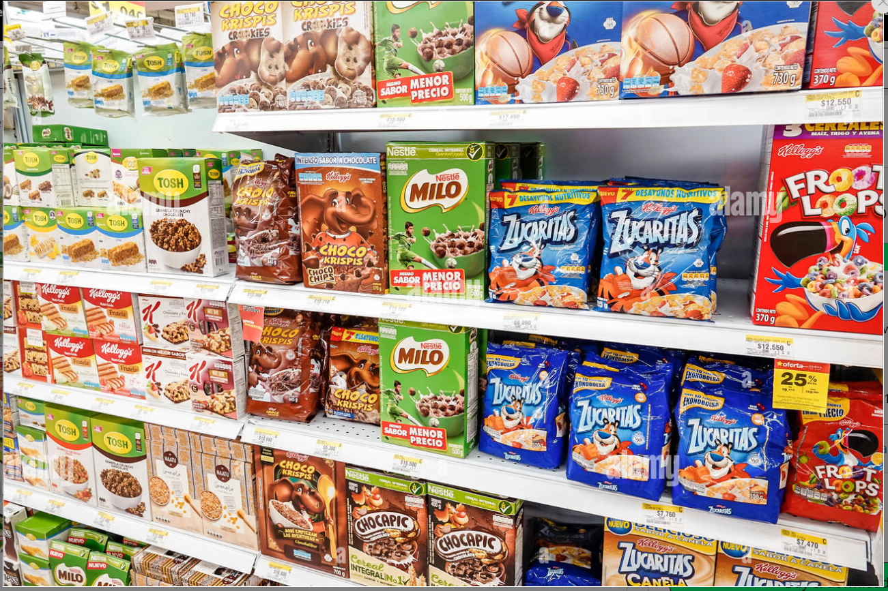

This was a project for a Hospital Emergency Room visit to determine the overall performance score and bridge the gap in the ER care.
From the analysis it was discovered that there was a delay in patient wait time and the patient arrival times.
The Recommendation given reduced the patient waittime by 15% and increased customer rating by 20%.


This is a unique project for Redox Airline. The analysis gave us insights as to the flights generating the most income and the best time to travel to different location.
The recommendation led to $10,000 increase in revenue and also reduced operational cost

Xpresstech is a unique food-tech startup that offers food delivery services with varieties of restaurant and food choices to suit their customer preferences. XpressTech is looking to draw insights from data collated from a customer survey based on their delivery performance and customer preferences. From the analysis conducted, I was able to effectively interpret insights to stakeholders that influenced the overall business operation and increased user satisfaction rating by 15%

This is analysis was for leading products of nestle, to determine the best product in the market and how theor customers consume this products and identify process improvement. From this analysis we can see that Milo is the most profitable products
and also a further analysis on the locations was done to enable us generate actionable insights to support product positioning and pricing. From the recommendations and reports generated if diligently implemented will lead to an
overall revenue boost of over $100000 and also reduce cost by 10%.

Tv electronics distribution brand that wants to implement a comprehensive database management system to have a competitive edge in business, understand their business sales pattern and improve
their sales. I queried the dataset and arrived at strategic insights that boosted sales by 25% and increased revenue.

This is a unique task to query data from a charity organization on its donor insights and donation rates with the aim on how to increase the number of donors in the
database, increase the donation frequency of the donors and how to increase the value of donations in the database. Recommendations made from the insights drawn led to increase in the quality and quantity of donations made .
This is a unique analysis of the employees of a reputable firm with intent to understand their demographics and draw actionable insight from key performance metrics. I was able to interprete insights showing the monthly trends in performance
for these employees. Recommendations made from these analysis helped guide the stakeholders in data-driven decisons as pertains further recruitments, age bracket of active workforce and impacted positively on the overall turn over rate.